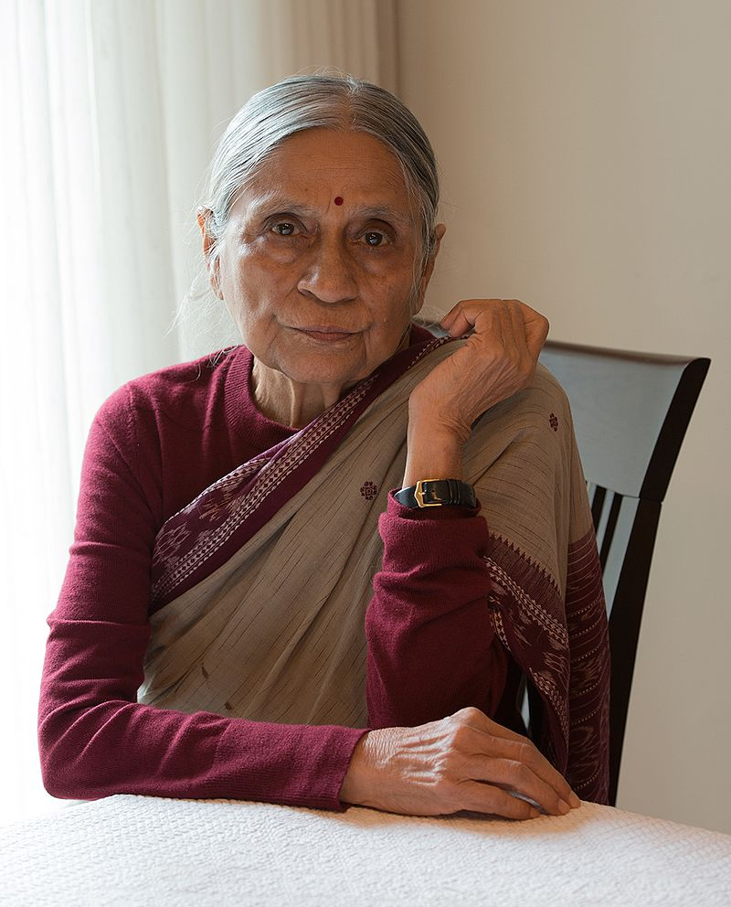
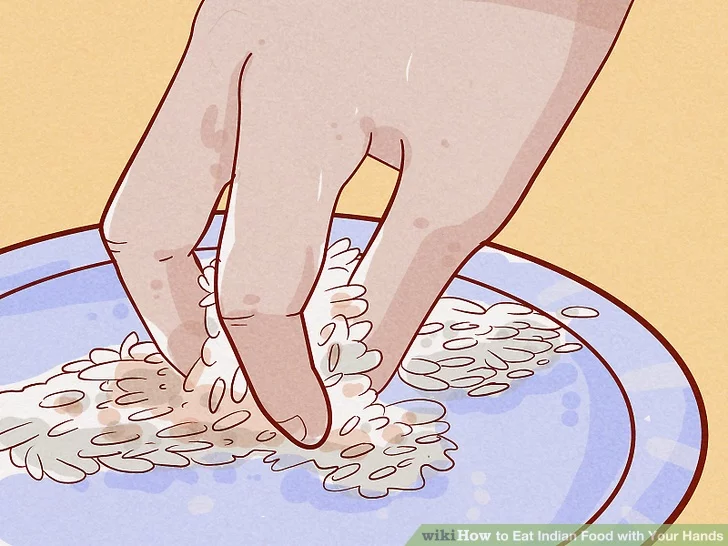
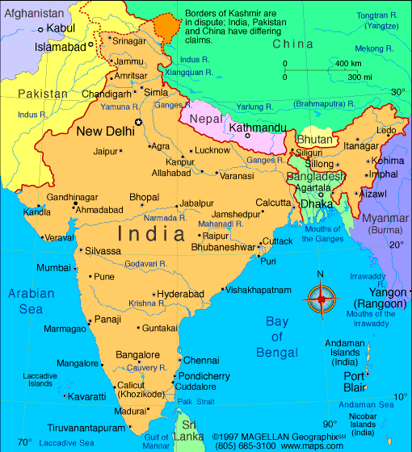

Indija
Spalvinga ir įvairi šalis, kur praeitis ir dabartis susipina kasdieniame gyvenime.
Spalvinga ir įvairi šalis, kur praeitis ir dabartis susipina kasdieniame gyvenime.
Indijoje dažniausiai sveikinamasi sudėjus delnus prie krūtinės ir lengvai linktelint galvą – tai „Namaste“. Tai ne tik mandagus gestas, bet ir reiškia pagarbumą bei dvasišką ryšį su kitu žmogumi. O jei nori padaryti gerą įspūdį vietiniams – pabandyk ir pats pasakyti „Namaste“!
Daugelis Indijos šeimų gyvena didelėse bendruomenėse, kur po vienu stogu gyvena kelios kartos. Seneliai, dėdės, tetos, pusbroliai – visi dalijasi gyvenimo džiaugsmais ir rūpesčiais. Nors tai reiškia mažiau privatumo, bet daugiau meilės, pagalbos ir nesibaigiančių šeimos istorijų!
Karvės Indijoje yra laikomos šventomis ir turi ypatingą vietą kultūroje. Jos vaikšto laisvai net didmiesčiuose, ir jei kokia užtvers kelią – teks kantriai laukti. Karvės gerbiamos ir dėl religinių priežasčių, ir dėl jų naudos – jų pienas, sviestas ir kiti produktai naudojami tiek maistui, tiek ritualams.
Turguose ar mažose parduotuvėlėse niekas nemoka pirmos pasiūlytos kainos. Indijoje derėtis – tikras menas, o tie, kurie moka gudriai sumažinti kainą, yra gerbiami. Tad jei nori nusipirkti suvenyrą ar spalvingą sarį – pasiruošk linksmai derybų kovai!
Indijoje tradiciškai ranką spaudžia tik vyrai su vyrais. Moterys dažniausiai sveikinasi su „Namaste“, ypač jei nepažįsta žmogaus labai artimai. Taigi, jei nori parodyti pagarbą, verčiau suspausk delnus ir linktelk galvą!

Indijoje labai svarbi pagarba vyresniems. Jaunesni dažnai palenkia galvą ar net paliečia vyresnio žmogaus kojas kaip pagarbos ženklą. Sprendimus šeimoje priima vyriausi, o jų patarimai laikomi neįkainojamais. Taigi, jei Indijoje pagyvenęs žmogus tau ką nors patars – verta išklausyti!

Indijoje žmonės priprato prie mažų atstumų – tiek gatvėse, tiek autobusuose, tiek eilėse prie kiosko. Jei Indijoje pajusi, kad kas nors stovi per arti – nesijaudink, tai visiškai normalu. Čia bendruomeniškumas svarbesnis už atstumus!
Respublikos diena švenčiama sausio 26 d., minimas Indijos Konstitucijos įsigaliojimas su kariniais paradais ir oficialiomis ceremonijomis.
Nepriklausomybės diena švenčiama rugpjūčio 15 d., švenčiama Indijos nepriklausomybė nuo Britanijos su vėliavos pakėlimu ir kultūriniais renginiais.
Gandžio Džajanti diena švenčiama spalio 2 d., Mahatmos Gandžio gimimo diena, minima tylos akimirkomis ir pagarbos renginiais.
Divali - spalio–lapkričio mėn. (priklausomai nuo mėnulio kalendoriaus), šviesos šventė, simbolizuojanti gėrio pergalę prieš blogį, švenčiama fejerverkais, žibintais ir šeimos susibūrimais.
Štai keletas dažnai naudojamų frazių Indijoje! Šitos frazės padės nepasimesti pokalbių metu. Tačiau šiomis frazėmis reikia naudotis atsargiai, nes jei netyčia persistengsi, gali pasirodyti nemandagiai.
Reikšmė: padaryti tai, kas būtina.
Panaudojimas: „Do the needful and send the report.“
Ši frazė labai populiari Indijoje ir Pietų Azijoje, ypač oficialiuose el. laiškuose ar verslo aplinkoje.
Patarimas! Anglakalbėse šalyse ši frazė skamba keistai ar pasenusiai. Vakarų kultūrose geriau sakyti „Please take care of it“ arba „Please handle it.“
Reikšmė: intensyvus mokymasis.
Panaudojimas: „I can't go, I'm mugging for my exam.“
Indijoje „mugging“ reiškia įsimintiną mokymąsi, dažnai be gilaus supratimo. Kitose šalyse šis žodis reiškia „užpuolimą su tikslu apvogti“!
Patarimas! Naudojant tarptautinėje aplinkoje, geriau sakyti „studying hard“ ar „cramming“, kad išvengtumėte nesusipratimų.
Reikšmė: trukdyti, erzinti nuolatiniu buvimu šalia.
Panaudojimas: „Stop sitting on my head, I'll finish soon!“
Tai metaforiška frazė, kuri Indijoje reiškia per didelį kišimąsi į kito žmogaus veiklą.
Patarimas! Anglakalbiai šios frazės nesupranta pažodžiui. Geriau sakyti „Stop pestering me“ ar „Stop hovering over me“.
Reikšmė: erzinti nuolatiniu kalbėjimu, prašymais.
Panaudojimas: „He keeps eating my brain today!“
Tai dažnai naudojama šeimose ar tarp draugų, kai kas nors tampa per daug įkyrus.
Patarimas! Vakarų šalyse žmonės šios frazės gali nesuprasti. Vietoj to geriau sakyti „Stop annoying me“ ar „You’re driving me crazy“.
Reikšmė: veikla, skirta tik praleisti laiką.
Panaudojimas: „Watching TV is just a timepass for me.“
Šis posakis gali būti vartojamas tiek rimtai, tiek šiek tiek ironiškai, priklausomai nuo tono.
Patarimas! Jei norite pridėti papildomo pagyrimo, galite sakyti „Fair play to ya!“ vietoj tiesiog „Fair play“.
Reikšmė: išvykęs iš miesto, gyvenamosios vietos.
Panaudojimas: „I can't meet you today, I'm out of station.“
Ši frazė kilusi iš britų kolonijinės Anglijos, tačiau dabar dažniausiai vartojama tik Indijoje.
Patarimas! Kitur pasaulyje geriau sakyti „I’m out of town“ ar „I’m traveling“.
Reikšmė: paankstinti susitikimą.
Panaudojimas: „The meeting is preponed to 10 AM.“
Nors šis žodis logiškai priešingas „postpone“ (atidėti), jis beveik nenaudojamas už Indijos ribų.
Patarimas! Vietoje jo geriau naudoti „reschedule to an earlier time“ ar „move up the meeting“.
Reikšmė: baigti mokyklą, universitetą.
Panaudojimas: „I passed out from college last year.“
Indijoje ši frazė reiškia „baigti mokslus“, bet kitur ji reiškia „nualpti“ ar „netekti sąmonės“.
Patarimas! Jei kalbate už Indijos ribų, vartokite „graduate“ vietoj „pass out“.
Reikšmė: atsakyti į pranešimą ar el. laišką.
Panaudojimas: „Please revert at your earliest convenience.“
Anglakalbėse šalyse „revert“ reiškia „grįžti į ankstesnę būseną“, todėl ši frazė gali sukelti sumaištį.
Patarimas! Geriau sakyti „reply“ ar „get back to me“.


Štai keletas dalykų, kurių niekada nederėtumėte daryti, jei norite susilieti ir išvengti nepatogių situacijų. Vadovaukitės šiais patarimais, kad padarytumėte puikų įspūdį!
| Negalima: | Kodėl? | Ką daryti vietoj to: | |
|---|---|---|---|
| Rodyti meilę viešai | Vieši bučiniai ar apkabinimai dažnai laikomi netinkamais, ypač konservatyviose vietose. | Pasilaikyk meilės demonstravimą privačiai. | |
| Eiti su batais į vidų | Batai laikomi nešvariais ir jų negalima dėvėti namuose ar šventyklose. | Nusiauk batus prieš įeidami į vidaus patalpas. | |
| Rodyti pečius ar kelius šventyklose | Kukli apranga yra pagarba religijai ir šventoms vietoms. | Dėvėk ilgus drabužius, uždengiančius pečius ir kelius. | |
| Kreiptis į vyresniuosius vardu | Vyresniems žmonėms reiškiama pagarba kreipiantis oficialiai arba su šeimos pavadinimais. | Vartok „dėdė“, „teta“ ar oficialius titulus. |  |
| Dėvėti odinių drabužių šventyklose | Karvės laikomos šventomis, todėl oda gali būti įžeidžianti religinėje aplinkoje. | Venk odinių gaminių religinių lankymų metu. | |
| Valgyti arba duoti daiktų kaire ranka | Kairė ranka laikoma nešvaria – tai susiję su higienos įpročiais. | Valgyk ir perduokite daiktus dešine ranka. |  |
| Per dažnai sakyti „prašau“ | Dažnas „prašau“ naudojimas gali skambėti nenatūraliai ar perdėtai oficialiai. | Būk mandagus, bet šiltas ir nuoširdus. | |
| Tiesiog atsisakyti kvietimo | Tiesioginis „ne“ gali būti laikomas nemandagiu ar įžeidžiančiu. | Atsisakyk švelniai: „gal kitą kartą“, „labai ačiū, bet šįkart ne“. |  |
| Vertinti visą šalį pagal vieną patirtį | Indija labai įvairi – viena patirtis neatspindi visos šalies. | Būk atviras skirtingoms kultūroms ir regionams. |  |